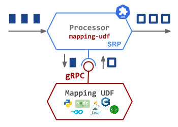
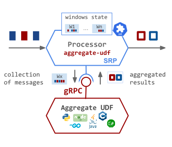
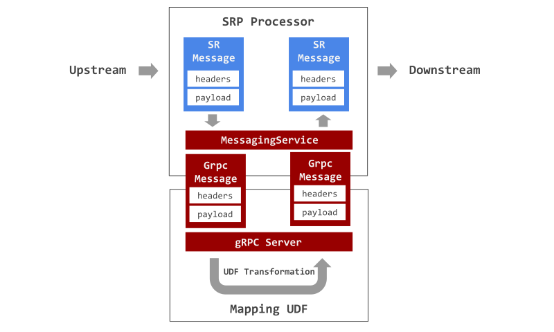

User Defined Functions
The Streaming Runtime provides a pluggable User Defined Functions (UDF) that allows implementing the streaming transformation logic in a language of your choice, test it in isolation with your favorite tools and finally package it in a standalone container image.
The function is deployed as a sidecar along the SRP processor that acts as the connection between the streams and the function deployed. To build your custom function it should adhere to the UDF Protocol Buffer Contract and run as gRPC service.
UDF Types
Two types of UDF functions are supported: Mapping UDF and Aggregation UDF
 Mapping UDF - The SRP processor forwards the inbound messages, element-wise over the MessagingService, to the UDF function.
The function uses the input to compute a result and return it to the SRP. In turn the SRP wraps the result as an internal message and sends it downstream.
Every inbound message produces a single outbound result!
 Aggregation UDF - When the Time-Window aggregation is enabled and a window is ready for release, the SRP processor forwards the window content (e.g. collection of messages) to the UDF function. Later processes the collection, computes one or more aggregation results that are returned to the SRP and sent downstream.
Every aggregation could produces one or more outbound results!
The Mapping and the Aggregating UDF container images are registered with the SRP Processor CR, using the the spec.templates.spec.containers configuration section.
The SR uses this information to run the UDF image as a side-container in the same pod as the SRP Processor.
Resource Definition
To plug a custom UDF to your SRP Processor, you can refer to UDF’s image from within the Processor resourced definition:
UDF Contract
The contract of the function specifies a GrpcMessage schema to model the messages exchanged between the multibinder and the function and the MessagingService rpc service to interact with the UDF.
The GrpcPayloadCollection is a temporal workaround to help serialize/deserialize collection on messages, for example the time-window aggregates,
to and from single byte array. This allow the SRP to sends time-window aggregates to the UDFs using the same GrpcMessage format.
syntax = "proto3";
option java_multiple_files = true;
package org.springframework.cloud.function.grpc;
message GrpcMessage {
bytes payload = 1;
map<string, string> headers = 2;
}
message GrpcPayloadCollection {
repeated bytes payload = 1;
}
service MessagingService {
rpc requestReply(GrpcMessage) returns (GrpcMessage);
}
The MessageService.proto allows you to generate required stubs to support the true polyglot nature of gRPC while interacting with functions hosted by Streaming Runtime.
The SRP Processor forwards the incoming messages over the MessagingService to the pre-configured UDF function.
The function response in turn is sent to the SRP's output stream.
Mapping UDF
The Mapping UDF function runs a gRPC server with the MessagingService implementation.
As shown in the following diagram, the SRP processor converts every inbound SR message into a GrpcMessage and invokes the requestReply method on the MessagingService.

The UDF MessagingService#requestReply implementation, handles the invocation, computes a result and returns it back as GrpcMessage.
The SRP processor converts the GrpcMessage result into internal SR Message and sends it downstream over the outbound Streams.
The 3.1-polyglot-udf-transformation.yaml example, uses a simple Python mapping UDF to convert the payload to upper case.
Following diagram visualizes how this polyglot-udf-transformation.yaml example is deployed by the Streaming Runtime into a running data pipeline:

Processor's spec.templates.spec.containers properties are used to register the UDF's image with the SRP processor to use it.
Sidecar
The Streaming RUntime collocates the UDF container along with the SPR processor container in the same Pod. This simplifies the (gRPC) communication between both containers as they use the 'localhost' network.
Here a few snippets how to implement Mapping UDFs in different languages:
-
Java:
You can find complete source code udf-uppercase-java. If you are building yourFunctionin Java you can find more information about the Spring Cloud Function gRPC support here. -
Python:
You can find complete source code udf-uppercase-pythondef requestReply(self, request, context): print("Server received Payload: %s and Headers: %s" % (request.payload.decode(), request.headers)) return MessageService_pb2.GrpcMessage( payload=str.encode(request.payload.decode().upper()), headers=request.headers) -
GoLang:
You can find complete source code udf-uppercase-gofunc (s *server) RequestReply(ctx context.Context, in *pb.GrpcMessage) (*pb.GrpcMessage, error) { log.Printf("Received: %v", string(in.Payload)) upperCasePayload := strings.ToUpper(string(in.Payload)) return &pb.GrpcMessage{Payload: []byte(upperCasePayload)}, nil }
Aggregation UDF
When the time-window aggregation is used the SRP processor forwards to the UDF not just a single message but the collection of all messages members of a time-window aggregation. Reversely the UDF may return not just a single result but a collection of results that are treated as separate downstream messages.
The MessagingService, used by the Mapping UDFs, expects a single GrpcMessage as input and single GrpcMessage as an output. So if we are to reuse the same gRPC service for Aggregation UDFs we need a workaround to allow serializing and deserializing collection of SR Messages to and from single GrpcMessage. Furthermore we need to do it in interoperable (e.g. language neutral) fashion.
The GrpcPayloadCollection message format is used to ensure interoperability of serialization and deserialization of the payloads for the messages exchanged between the SR Processor and the Aggregation UDF.
Following diagram illustrates the message flow:

The SR Message collections (aka time-window) is converted into a single GrpcMessage.
The headers of the first SR Message in the window is used as headers for the GrpcMessage, including a hardcoded contentType header of type multipart/<inner-message-content-type>. All SR Message payloads in the window are serialized, with the GrpcPayloadCollection help, into a single byte array used as GrpcMessage payload.
The Aggregation UDF is required to deserialize the GrpcMessage payload back into a collection of the original payloads, then apply the aggregation transformation and serialize the collection or results into a single byte array passed as payload in the return GrpcMessage.
Finally the SRP Processor turns the returned GrpcMessage into collection of SR Messages and sends them down streams, one by one.
The udf-utilities offers some helpers library that help to hide the gRPC and SerDeser boilerplate code.
Note
The GrpcPayloadCollection serialization/deserialization approach is a hackish workaround to reuse the existing MessagingService applicable for non-aggregated messages exchange.
A proper, cleaner approach would be to implement a dedicated AggregatedMessagingService that takes a collection of GrpcMessage messages as input and output.
Check the Time-Window Aggregation to see how Aggregation UDFs are being used to compute group-by-key results.